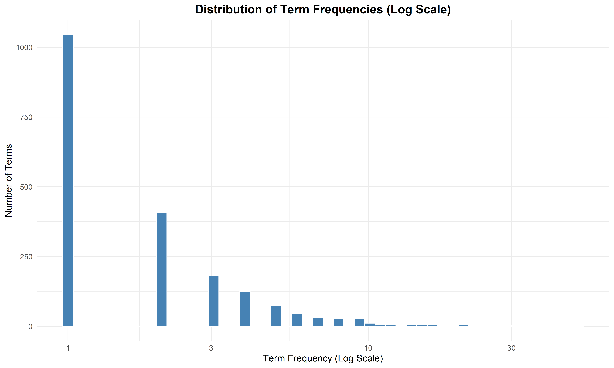
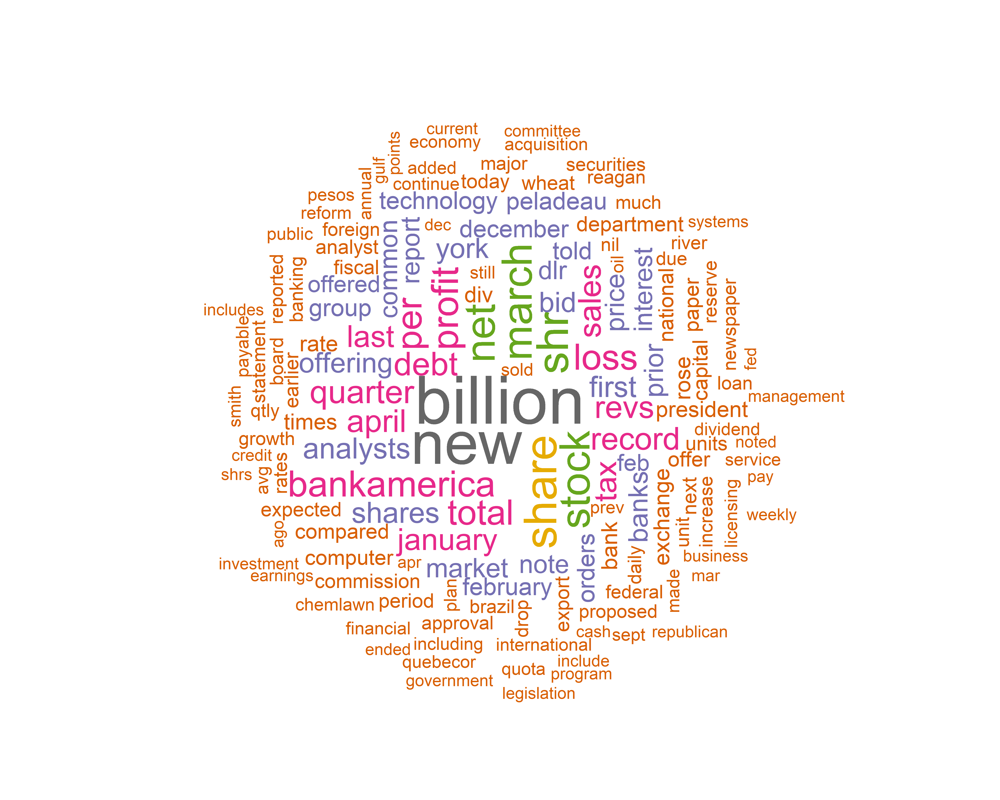
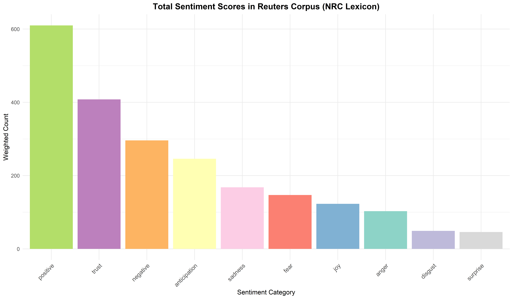
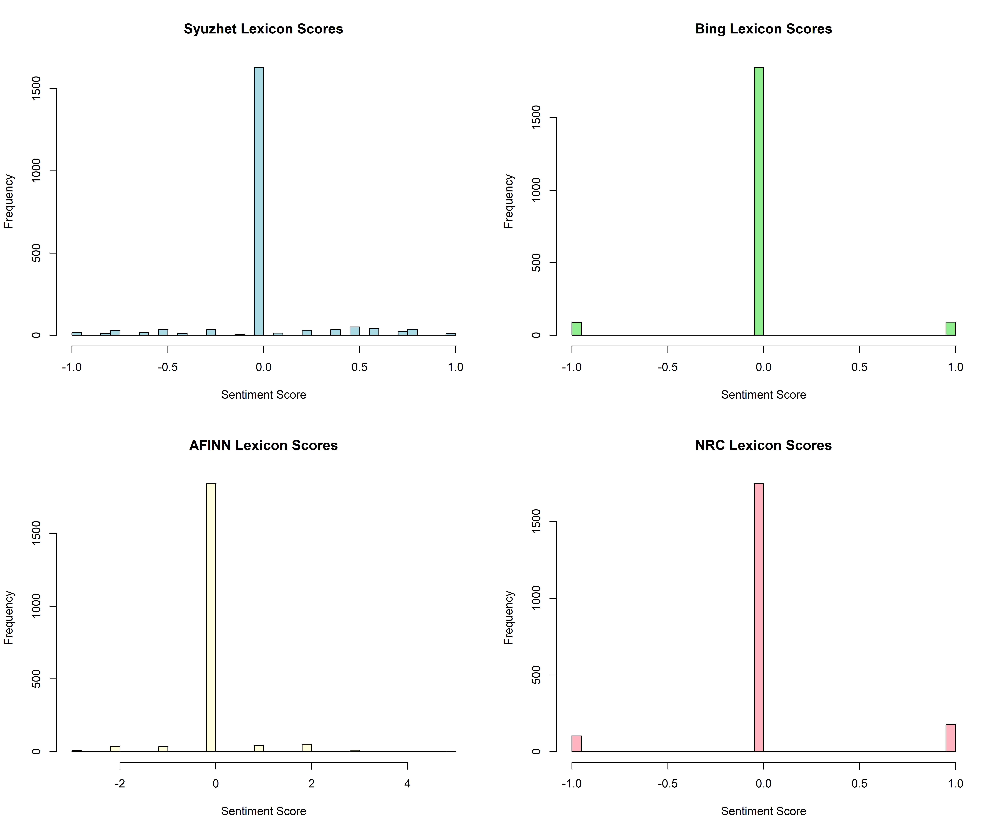
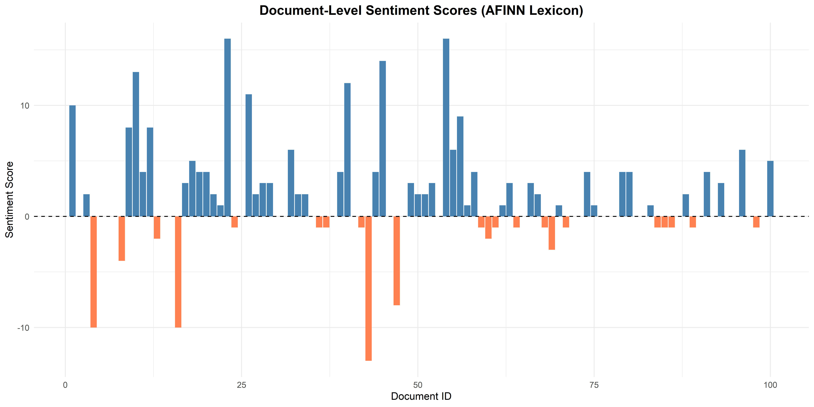
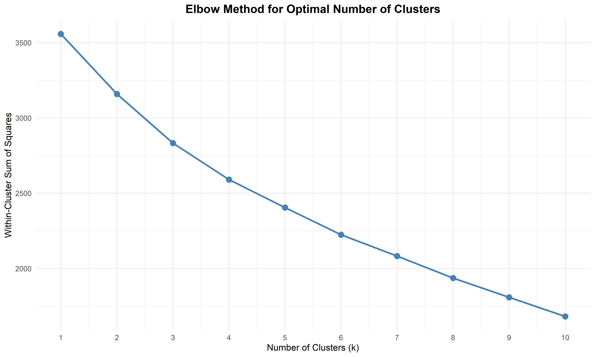
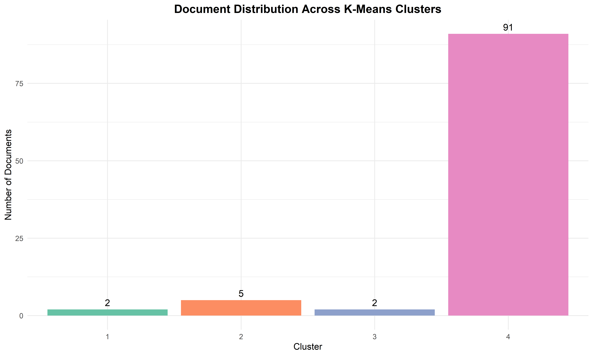

# Load required libraries for text mining and analysis.
# NOTE: Load tm and Reuters BEFORE httr to avoid content() function conflicts.
library(dplyr)
library(stringr)
library(tidyverse)
library(ggplot2)
library(kableExtra)
library(wordcloud)
library(tm)
library(SnowballC)
library(syuzhet)
library(RColorBrewer)
library(textdata)
library(NbClust)
# Install Reuters corpus package if needed.
# install.packages("tm.corpus.Reuters21578", repos = "http://datacube.wu.ac.at")
library(tm.corpus.Reuters21578)
# Set options for cleaner numeric output.
options(scipen = 999)Text Mining Analysis of Reuters News Articles
Data Loading and Corpus Creation
# Load the Reuters-21578 dataset.
data("Reuters21578")
reuters_docs <- Reuters21578
# Check the number of documents in the corpus.
num_docs <- length(reuters_docs)
print(paste("Documents in Reuters corpus:", num_docs))[1] "Documents in Reuters corpus: 21578"# For this analysis, we will work with the first 100 documents to ensure we have at least 50 entries.
# This also makes the analysis more manageable computationally.
reuters_corpus <- reuters_docs[1:100]
# Verify the corpus size.
print(paste("Documents for analysis:", length(reuters_corpus)))[1] "Documents for analysis: 100"# IMPORTANT: Extract raw text from corpus BEFORE loading httr.
# This avoids the conflict between httr::content() and tm::content().
# The Reuters21578 corpus stores text in the $content slot of each document.
# First, let us inspect the structure of one document to understand how to extract text.
print("INSPECTING DOCUMENT STRUCTURE")[1] "INSPECTING DOCUMENT STRUCTURE"print(class(reuters_corpus[[1]]))[1] "PlainTextDocument" "TextDocument" print(names(reuters_corpus[[1]]))[1] "content" "meta" # Extract text using the content() function from tm package (before httr masks it).
raw_texts_for_gpt <- character(length(reuters_corpus))
for (i in seq_along(reuters_corpus)) {
# Use tm::content() explicitly to get the text content.
text_content <- as.character(reuters_corpus[[i]])
# Collapse if it is a vector of lines.
if (length(text_content) > 1) {
raw_texts_for_gpt[i] <- paste(text_content, collapse = " ")
} else if (length(text_content) == 1) {
raw_texts_for_gpt[i] <- text_content
} else {
raw_texts_for_gpt[i] <- ""
}
}
# Verify extraction worked.
print(paste("Extracted", length(raw_texts_for_gpt), "documents for GPT summarization"))[1] "Extracted 100 documents for GPT summarization"print(paste("First document length:", nchar(raw_texts_for_gpt[1]), "characters"))[1] "First document length: 2860 characters"print(paste("First document preview:", substr(raw_texts_for_gpt[1], 1, 300)))[1] "First document preview: Showers continued throughout the week in\nthe Bahia cocoa zone, alleviating the drought since early\nJanuary and improving prospects for the coming temporao,\nalthough normal humidity levels have not been restored,\nComissaria Smith said in its weekly review.\n The dry period means the temporao will b"Data Preprocessing and Cleaning
# Convert all text to lowercase for consistent matching.
reuters_corpus <- tm_map(reuters_corpus, content_transformer(tolower))# Define a function to replace specific characters with spaces.
toSpace <- content_transformer(function(x, pattern) gsub(pattern, " ", x))
# Define a function to remove apostrophes.
remApostrophe <- content_transformer(function(x, pattern) gsub(pattern, "", x))# Define a custom function to remove special characters.
toSpace <- content_transformer(function(x, pattern) gsub(pattern, " ", x))
# Remove special characters by replacing them with spaces.
reuters_corpus <- tm_map(reuters_corpus, toSpace, "@")
reuters_corpus <- tm_map(reuters_corpus, toSpace, "/")
reuters_corpus <- tm_map(reuters_corpus, toSpace, "\\]")
reuters_corpus <- tm_map(reuters_corpus, toSpace, "\\$")
reuters_corpus <- tm_map(reuters_corpus, toSpace, "—")
reuters_corpus <- tm_map(reuters_corpus, toSpace, "‐")
reuters_corpus <- tm_map(reuters_corpus, toSpace, "\u201C")
reuters_corpus <- tm_map(reuters_corpus, toSpace, "\u2018")
reuters_corpus <- tm_map(reuters_corpus, toSpace, "\u201D")
reuters_corpus <- tm_map(reuters_corpus, toSpace, "\u2019")
reuters_corpus <- tm_map(reuters_corpus, toSpace, "\\(")
reuters_corpus <- tm_map(reuters_corpus, toSpace, "\\)")
reuters_corpus <- tm_map(reuters_corpus, toSpace, "-")
# Remove apostrophes using a custom function.
remApostrophe <- content_transformer(function(x, pattern) gsub(pattern, "", x))
reuters_corpus <- tm_map(reuters_corpus, remApostrophe, "'")# Remove numbers from the corpus.
reuters_corpus <- tm_map(reuters_corpus, removeNumbers)
# Remove punctuation from the corpus.
reuters_corpus <- tm_map(reuters_corpus, removePunctuation)# Preview the first document after removing special characters, numbers, and punctuation.
print("PREVIEW OF FIRST DOCUMENT (AFTER REMOVING SPECIAL CHARACTERS, NUMBERS, PUNCTUATION)")[1] "PREVIEW OF FIRST DOCUMENT (AFTER REMOVING SPECIAL CHARACTERS, NUMBERS, PUNCTUATION)"print(paste(as.character(reuters_corpus[[1]]), collapse = " "))[1] "showers continued throughout the week in\nthe bahia cocoa zone alleviating the drought since early\njanuary and improving prospects for the coming temporao\nalthough normal humidity levels have not been restored\ncomissaria smith said in its weekly review\n the dry period means the temporao will be late this year\n arrivals for the week ended february were bags\nof kilos making a cumulative total for the season of \nmln against at the same stage last year again it seems\nthat cocoa delivered earlier on consignment was included in the\narrivals figures\n comissaria smith said there is still some doubt as to how\nmuch old crop cocoa is still available as harvesting has\npractically come to an end with total bahia crop estimates\naround mln bags and sales standing at almost mln there\nare a few hundred thousand bags still in the hands of farmers\nmiddlemen exporters and processors\n there are doubts as to how much of this cocoa would be fit\nfor export as shippers are now experiencing dificulties in\nobtaining bahia superior certificates\n in view of the lower quality over recent weeks farmers have\nsold a good part of their cocoa held on consignment\n comissaria smith said spot bean prices rose to to \ncruzados per arroba of kilos\n bean shippers were reluctant to offer nearby shipment and\nonly limited sales were booked for march shipment at to\n dlrs per tonne to ports to be named\n new crop sales were also light and all to open ports with\njune july going at and dlrs and at and dlrs\nunder new york july aug sept at and dlrs\nper tonne fob\n routine sales of butter were made march april sold at\n and dlrs\n april may butter went at times new york may june july\nat and dlrs aug sept at to dlrs and at\n and times new york sept and oct dec at dlrs and\n times new york dec comissaria smith said\n destinations were the us covertible currency areas\nuruguay and open ports\n cake sales were registered at to dlrs for\nmarch april dlrs for may dlrs for aug and times\nnew york dec for oct dec\n buyers were the us argentina uruguay and convertible\ncurrency areas\n liquor sales were limited with march april selling at \nand dlrs june july at dlrs and at times new\nyork july aug sept at dlrs and at times new york\nsept and oct dec at times new york dec comissaria smith\nsaid\n total bahia sales are currently estimated at mln bags\nagainst the crop and mln bags against the \ncrop\n final figures for the period to february are expected to\nbe published by the brazilian cocoa trade commission after\ncarnival which ends midday on february \n reuter\n"# View the list of English stop words that will be removed.
print("ENGLISH STOP WORDS TO BE REMOVED")[1] "ENGLISH STOP WORDS TO BE REMOVED"print(stopwords("english")) [1] "i" "me" "my" "myself" "we"
[6] "our" "ours" "ourselves" "you" "your"
[11] "yours" "yourself" "yourselves" "he" "him"
[16] "his" "himself" "she" "her" "hers"
[21] "herself" "it" "its" "itself" "they"
[26] "them" "their" "theirs" "themselves" "what"
[31] "which" "who" "whom" "this" "that"
[36] "these" "those" "am" "is" "are"
[41] "was" "were" "be" "been" "being"
[46] "have" "has" "had" "having" "do"
[51] "does" "did" "doing" "would" "should"
[56] "could" "ought" "i'm" "you're" "he's"
[61] "she's" "it's" "we're" "they're" "i've"
[66] "you've" "we've" "they've" "i'd" "you'd"
[71] "he'd" "she'd" "we'd" "they'd" "i'll"
[76] "you'll" "he'll" "she'll" "we'll" "they'll"
[81] "isn't" "aren't" "wasn't" "weren't" "hasn't"
[86] "haven't" "hadn't" "doesn't" "don't" "didn't"
[91] "won't" "wouldn't" "shan't" "shouldn't" "can't"
[96] "cannot" "couldn't" "mustn't" "let's" "that's"
[101] "who's" "what's" "here's" "there's" "when's"
[106] "where's" "why's" "how's" "a" "an"
[111] "the" "and" "but" "if" "or"
[116] "because" "as" "until" "while" "of"
[121] "at" "by" "for" "with" "about"
[126] "against" "between" "into" "through" "during"
[131] "before" "after" "above" "below" "to"
[136] "from" "up" "down" "in" "out"
[141] "on" "off" "over" "under" "again"
[146] "further" "then" "once" "here" "there"
[151] "when" "where" "why" "how" "all"
[156] "any" "both" "each" "few" "more"
[161] "most" "other" "some" "such" "no"
[166] "nor" "not" "only" "own" "same"
[171] "so" "than" "too" "very" # Remove English stop words from the corpus.
reuters_corpus <- tm_map(reuters_corpus, removeWords, stopwords("english"))# Remove additional custom stop words specific to news articles.
# These include common news-related terms that do not add analytical value.
custom_stopwords <- c("said", "says", "also", "reuter", "reuters", "will", "can", "may", "one", "two", "three", "four", "five", "six", "seven", "eight", "nine", "ten", "mln", "dlrs", "pct", "cts", "year", "years", "month", "months", "week", "weeks", "day", "days", "inc", "corp", "ltd", "company", "companies")
reuters_corpus <- tm_map(reuters_corpus, removeWords, custom_stopwords)# Strip extra whitespace from the documents.
reuters_corpus <- tm_map(reuters_corpus, stripWhitespace)# Preview the first document after stop word removal.
print("PREVIEW OF FIRST DOCUMENT (AFTER STOP WORD REMOVAL)")[1] "PREVIEW OF FIRST DOCUMENT (AFTER STOP WORD REMOVAL)"print(paste(as.character(reuters_corpus[[1]]), collapse = " "))[1] "showers continued throughout bahia cocoa zone alleviating drought since early january improving prospects coming temporao although normal humidity levels restored comissaria smith weekly review dry period means temporao late arrivals ended february bags kilos making cumulative total season stage last seems cocoa delivered earlier consignment included arrivals figures comissaria smith still doubt much old crop cocoa still available harvesting practically come end total bahia crop estimates around bags sales standing almost hundred thousand bags still hands farmers middlemen exporters processors doubts much cocoa fit export shippers now experiencing dificulties obtaining bahia superior certificates view lower quality recent farmers sold good part cocoa held consignment comissaria smith spot bean prices rose cruzados per arroba kilos bean shippers reluctant offer nearby shipment limited sales booked march shipment per tonne ports named new crop sales light open ports june july going new york july aug sept per tonne fob routine sales butter made march april sold april butter went times new york june july aug sept times new york sept oct dec times new york dec comissaria smith destinations us covertible currency areas uruguay open ports cake sales registered march april aug times new york dec oct dec buyers us argentina uruguay convertible currency areas liquor sales limited march april selling june july times new york july aug sept times new york sept oct dec times new york dec comissaria smith total bahia sales currently estimated bags crop bags crop final figures period february expected published brazilian cocoa trade commission carnival ends midday february "# Apply stemming to reduce words to their root forms.
# This helps consolidate related words like "running", "runs", "ran" to "run".
reuters_corpus_stemmed <- tm_map(reuters_corpus, stemDocument)
# Preview the first document after stemming.
print("PREVIEW OF FIRST DOCUMENT (AFTER STEMMING)")[1] "PREVIEW OF FIRST DOCUMENT (AFTER STEMMING)"print(paste(as.character(reuters_corpus_stemmed[[1]]), collapse = " "))[1] "shower continu throughout bahia cocoa zone allevi drought sinc earli januari improv prospect come temporao although normal humid level restor comissaria smith week review dri period mean temporao late arriv end februari bag kilo make cumul total season stage last seem cocoa deliv earlier consign includ arriv figur comissaria smith still doubt much old crop cocoa still avail harvest practic come end total bahia crop estim around bag sale stand almost hundr thousand bag still hand farmer middlemen export processor doubt much cocoa fit export shipper now experienc dificulti obtain bahia superior certif view lower qualiti recent farmer sold good part cocoa held consign comissaria smith spot bean price rose cruzado per arroba kilo bean shipper reluct offer nearbi shipment limit sale book march shipment per tonn port name new crop sale light open port june juli go new york juli aug sept per tonn fob routin sale butter made march april sold april butter went time new york june juli aug sept time new york sept oct dec time new york dec comissaria smith destin us covert currenc area uruguay open port cake sale regist march april aug time new york dec oct dec buyer us argentina uruguay convert currenc area liquor sale limit march april sell june juli time new york juli aug sept time new york sept oct dec time new york dec comissaria smith total bahia sale current estim bag crop bag crop final figur period februari expect publish brazilian cocoa trade commiss carniv end midday februari"Term Document Matrix Creation
# Create a Document Term Matrix from the cleaned corpus.
dtm <- DocumentTermMatrix(reuters_corpus)
# Inspect the DTM structure.
print("DOCUMENT TERM MATRIX SUMMARY")[1] "DOCUMENT TERM MATRIX SUMMARY"tm::inspect(dtm)<<DocumentTermMatrix (documents: 100, terms: 2027)>>
Non-/sparse entries: 3924/198776
Sparsity : 98%
Maximal term length: 17
Weighting : term frequency (tf)
Sample :
Terms
Docs bankamerica billion loss march net new profit share shr stock
1 0 0 0 4 0 9 0 0 0 0
16 12 2 0 0 0 0 0 0 0 5
18 0 2 0 0 0 0 0 4 0 0
26 0 3 0 1 0 4 0 0 0 0
28 0 0 1 0 0 0 0 0 0 0
4 12 2 0 0 0 0 0 0 0 5
45 0 0 0 1 0 0 0 3 0 1
54 0 0 0 0 0 3 0 0 0 0
61 0 2 0 0 0 0 0 0 0 5
79 0 0 0 0 0 9 1 0 0 2# Convert the DTM to a regular matrix for further analysis.
m <- as.matrix(dtm)
# Display the dimensions of the matrix.
print(paste("Matrix Dimensions:", nrow(m), "documents x", ncol(m), "terms"))[1] "Matrix Dimensions: 100 documents x 2027 terms"# Calculate the total frequency of each term across all documents.
term_freq <- colSums(m)
# Convert to a data frame for easier manipulation.
term_freq_df <- data.frame(
term = names(term_freq),
frequency = as.numeric(term_freq),
stringsAsFactors = FALSE
)
# Sort by frequency in descending order.
term_freq_df <- term_freq_df %>%
arrange(desc(frequency))
# Display the top 20 most frequent terms.
print(head(term_freq_df, 20)) term frequency
1 billion 50
2 new 45
3 share 32
4 shr 31
5 march 29
6 net 29
7 stock 29
8 profit 25
9 bankamerica 24
10 loss 24
11 per 24
12 total 23
13 debt 21
14 quarter 21
15 april 20
16 record 20
17 revs 20
18 sales 20
19 january 19
20 last 19# Create a histogram of term frequencies.
ggplot(term_freq_df, aes(x = frequency)) +
geom_histogram(bins = 50, fill = "steelblue", color = "white") +
scale_x_log10() +
labs(
title = "Distribution of Term Frequencies (Log Scale)",
x = "Term Frequency (Log Scale)",
y = "Number of Terms"
) +
theme_minimal() +
theme(
plot.title = element_text(hjust = 0.5, size = 14, face = "bold")
)
Word Cloud Visualization
# Create a basic word cloud of the most frequent terms.
set.seed(42)
wordcloud(
words = term_freq_df$term,
freq = term_freq_df$frequency,
min.freq = 5,
max.words = 150,
random.order = FALSE,
rot.per = 0.35,
colors = brewer.pal(8, "Dark2")
)
# Create a more colorful word cloud with different settings.
set.seed(123)
wordcloud(
words = term_freq_df$term,
freq = term_freq_df$frequency,
min.freq = 10,
max.words = 100,
random.order = FALSE,
rot.per = 0.25,
scale = c(4, 0.5),
colors = brewer.pal(9, "Blues")[4:9]
)Sentiment Analysis
# Load and preview the sentiment lexicons available in the syuzhet package.
# NRC LEXICON
nrc <- syuzhet::get_sentiment_dictionary(dictionary = "nrc")
print(head(nrc, n = 20L)) lang word sentiment value
1 english abba positive 1
2 english ability positive 1
3 english abovementioned positive 1
4 english absolute positive 1
5 english absolution positive 1
6 english absorbed positive 1
7 english abundance positive 1
8 english abundant positive 1
9 english academic positive 1
10 english academy positive 1
11 english acceptable positive 1
12 english acceptance positive 1
13 english accessible positive 1
14 english accolade positive 1
15 english accommodation positive 1
16 english accompaniment positive 1
17 english accomplish positive 1
18 english accomplished positive 1
19 english accomplishment positive 1
20 english accord positive 1# AFINN LEXICON
afinn <- syuzhet::get_sentiment_dictionary(dictionary = "afinn")
print(head(afinn, n = 20L)) word value
1 abandon -2
2 abandoned -2
3 abandons -2
4 abducted -2
5 abduction -2
6 abductions -2
7 abhor -3
8 abhorred -3
9 abhorrent -3
10 abhors -3
11 abilities 2
12 ability 2
13 aboard 1
14 aborted -1
15 aborts -1
16 absentee -1
17 absentees -1
18 absolve 2
19 absolved 2
20 absolves 2# BING LEXICON
bing <- syuzhet::get_sentiment_dictionary(dictionary = "bing")
print(head(bing, n = 20L)) word value
1 a+ 1
2 abound 1
3 abounds 1
4 abundance 1
5 abundant 1
6 accessable 1
7 accessible 1
8 acclaim 1
9 acclaimed 1
10 acclamation 1
11 accolade 1
12 accolades 1
13 accommodative 1
14 accomodative 1
15 accomplish 1
16 accomplished 1
17 accomplishment 1
18 accomplishments 1
19 accurate 1
20 accurately 1# SYUZHET LEXICON
syuzhet_lex <- syuzhet::get_sentiment_dictionary(dictionary = "syuzhet")
print(head(syuzhet_lex, n = 20L)) word value
1 abandon -0.75
2 abandoned -0.50
3 abandoner -0.25
4 abandonment -0.25
5 abandons -1.00
6 abducted -1.00
7 abduction -0.50
8 abductions -1.00
9 aberrant -0.60
10 aberration -0.80
11 abhor -0.50
12 abhorred -1.00
13 abhorrent -0.50
14 abhors -1.00
15 abilities 0.60
16 ability 0.50
17 abject -1.00
18 ablaze -0.25
19 abnormal -0.50
20 aboard 0.25# Demonstrate the NRC lexicon with example words.
# NRC Sentiment for "profit".
print(get_nrc_sentiment("profit")) anger anticipation disgust fear joy sadness surprise trust negative positive
1 0 0 0 0 0 0 0 0 0 0# NRC Sentiment for "loss".
print(get_nrc_sentiment("loss")) anger anticipation disgust fear joy sadness surprise trust negative positive
1 1 0 0 1 0 1 0 0 1 0# NRC Sentiment for "crisis".
print(get_nrc_sentiment("crisis")) anger anticipation disgust fear joy sadness surprise trust negative positive
1 0 0 0 0 0 0 0 0 1 0# Prepare the term frequency data for sentiment analysis.
sentiment_df <- data.frame(
term = term_freq_df$term,
term_frequency = term_freq_df$frequency,
stringsAsFactors = FALSE
)# Get NRC sentiment scores for all terms in the corpus.
nrc_sentiment <- get_nrc_sentiment(sentiment_df$term)
# Combine the sentiment scores with the term data.
sentiment_combined <- cbind(sentiment_df, nrc_sentiment)
# Preview the combined data.
print(head(sentiment_combined, 10)) term term_frequency anger anticipation disgust fear joy sadness
1 billion 50 0 0 0 0 0 0
2 new 45 0 0 0 0 0 0
3 share 32 0 1 0 0 1 0
4 shr 31 0 0 0 0 0 0
5 march 29 0 0 0 0 0 0
6 net 29 0 0 0 0 0 0
7 stock 29 0 0 0 0 0 0
8 profit 25 0 0 0 0 0 0
9 bankamerica 24 0 0 0 0 0 0
10 loss 24 1 0 0 1 0 1
surprise trust negative positive
1 0 0 0 0
2 0 0 0 0
3 0 1 0 1
4 0 0 0 0
5 0 0 0 1
6 0 0 0 0
7 0 0 0 0
8 0 0 0 0
9 0 0 0 0
10 0 0 1 0# Multiply sentiment scores by term frequency to get weighted sentiment.
sentiment_cols <- names(nrc_sentiment)
# Create a copy for weighted calculations.
sentiment_weighted <- sentiment_combined
# Weight each sentiment column by term frequency.
for (col in sentiment_cols) {
sentiment_weighted[[col]] <- sentiment_weighted[[col]] * sentiment_weighted$term_frequency
}
# Preview the weighted data.
print(head(sentiment_weighted, 10)) term term_frequency anger anticipation disgust fear joy sadness
1 billion 50 0 0 0 0 0 0
2 new 45 0 0 0 0 0 0
3 share 32 0 32 0 0 32 0
4 shr 31 0 0 0 0 0 0
5 march 29 0 0 0 0 0 0
6 net 29 0 0 0 0 0 0
7 stock 29 0 0 0 0 0 0
8 profit 25 0 0 0 0 0 0
9 bankamerica 24 0 0 0 0 0 0
10 loss 24 24 0 0 24 0 24
surprise trust negative positive
1 0 0 0 0
2 0 0 0 0
3 0 32 0 32
4 0 0 0 0
5 0 0 0 29
6 0 0 0 0
7 0 0 0 0
8 0 0 0 0
9 0 0 0 0
10 0 0 24 0# Calculate total sentiment across all terms.
sentiment_totals <- colSums(sentiment_weighted[, sentiment_cols])
# Create a data frame for plotting.
sentiment_totals_df <- data.frame(
sentiment = names(sentiment_totals),
count = as.numeric(sentiment_totals),
stringsAsFactors = FALSE
)
# Create a bar plot of sentiment totals.
ggplot(sentiment_totals_df, aes(x = reorder(sentiment, -count), y = count, fill = sentiment)) +
geom_bar(stat = "identity") +
scale_fill_brewer(palette = "Set3") +
labs(
title = "Total Sentiment Scores in Reuters Corpus (NRC Lexicon)",
x = "Sentiment Category",
y = "Weighted Count"
) +
theme_minimal() +
theme(
plot.title = element_text(hjust = 0.5, size = 14, face = "bold"),
axis.text.x = element_text(angle = 45, hjust = 1, size = 10),
legend.position = "none"
)
# Compare sentiment scores across different lexicons.
sentiment_df$syuzhet_score <- as.numeric(get_sentiment(sentiment_df$term, method = "syuzhet"))
sentiment_df$bing_score <- as.numeric(get_sentiment(sentiment_df$term, method = "bing"))
sentiment_df$afinn_score <- as.numeric(get_sentiment(sentiment_df$term, method = "afinn"))
sentiment_df$nrc_score <- as.numeric(get_sentiment(sentiment_df$term, method = "nrc"))
# Preview the multi-lexicon sentiment data.
print(head(sentiment_df, 20)) term term_frequency syuzhet_score bing_score afinn_score nrc_score
1 billion 50 0.00 0 0 0
2 new 45 0.80 0 0 0
3 share 32 0.50 0 1 1
4 shr 31 0.00 0 0 0
5 march 29 0.00 0 0 1
6 net 29 0.00 0 0 0
7 stock 29 0.00 0 0 0
8 profit 25 0.00 0 2 0
9 bankamerica 24 0.00 0 0 0
10 loss 24 -0.75 -1 -3 -1
11 per 24 0.00 0 0 0
12 total 23 0.00 0 0 0
13 debt 21 -0.75 -1 -2 -1
14 quarter 21 0.00 0 0 0
15 april 20 0.00 0 0 0
16 record 20 0.00 0 0 0
17 revs 20 0.00 0 0 0
18 sales 20 0.00 0 0 0
19 january 19 0.00 0 0 0
20 last 19 0.00 0 0 0# Create histograms comparing sentiment distributions across lexicons.
par(mfrow = c(2, 2))
hist(sentiment_df$syuzhet_score, breaks = 30, col = "lightblue", main = "Syuzhet Lexicon Scores", xlab = "Sentiment Score")
hist(sentiment_df$bing_score, breaks = 30, col = "lightgreen", main = "Bing Lexicon Scores", xlab = "Sentiment Score")
hist(sentiment_df$afinn_score, breaks = 30, col = "lightyellow", main = "AFINN Lexicon Scores", xlab = "Sentiment Score")
hist(sentiment_df$nrc_score, breaks = 30, col = "lightpink", main = "NRC Lexicon Scores", xlab = "Sentiment Score")
par(mfrow = c(1, 1))# Classify terms as positive, neutral, or negative for each lexicon.
sentiment_classified <- sentiment_df %>%
mutate(
syuzhet_class = sign(syuzhet_score),
bing_class = sign(bing_score),
afinn_class = sign(afinn_score),
nrc_class = sign(nrc_score)
) %>%
mutate(
syuzhet_class = factor(syuzhet_class, levels = c(-1, 0, 1), labels = c("Negative", "Neutral", "Positive")),
bing_class = factor(bing_class, levels = c(-1, 0, 1), labels = c("Negative", "Neutral", "Positive")),
afinn_class = factor(afinn_class, levels = c(-1, 0, 1), labels = c("Negative", "Neutral", "Positive")),
nrc_class = factor(nrc_class, levels = c(-1, 0, 1), labels = c("Negative", "Neutral", "Positive"))
)
# Calculate proportions for each lexicon.
print("SENTIMENT CLASSIFICATION BY LEXICON")[1] "SENTIMENT CLASSIFICATION BY LEXICON"print("Syuzhet Lexicon:")[1] "Syuzhet Lexicon:"print(prop.table(table(sentiment_classified$syuzhet_class)))
Negative Neutral Positive
0.07696103 0.80414406 0.11889492 print("Bing Lexicon:")[1] "Bing Lexicon:"print(prop.table(table(sentiment_classified$bing_class)))
Negative Neutral Positive
0.04390725 0.91169216 0.04440059 print("AFINN Lexicon:")[1] "AFINN Lexicon:"print(prop.table(table(sentiment_classified$afinn_class)))
Negative Neutral Positive
0.03946719 0.90823878 0.05229403 print("NRC Lexicon:")[1] "NRC Lexicon:"print(prop.table(table(sentiment_classified$nrc_class)))
Negative Neutral Positive
0.05081401 0.86137148 0.08781450 # Create a summary table comparing lexicon results.
lexicon_summary <- data.frame(
Lexicon = c("Syuzhet", "Bing", "AFINN", "NRC"),
Negative_Pct = c(
sum(sentiment_classified$syuzhet_class == "Negative", na.rm = TRUE) / nrow(sentiment_classified) * 100,
sum(sentiment_classified$bing_class == "Negative", na.rm = TRUE) / nrow(sentiment_classified) * 100,
sum(sentiment_classified$afinn_class == "Negative", na.rm = TRUE) / nrow(sentiment_classified) * 100,
sum(sentiment_classified$nrc_class == "Negative", na.rm = TRUE) / nrow(sentiment_classified) * 100
),
Neutral_Pct = c(
sum(sentiment_classified$syuzhet_class == "Neutral", na.rm = TRUE) / nrow(sentiment_classified) * 100,
sum(sentiment_classified$bing_class == "Neutral", na.rm = TRUE) / nrow(sentiment_classified) * 100,
sum(sentiment_classified$afinn_class == "Neutral", na.rm = TRUE) / nrow(sentiment_classified) * 100,
sum(sentiment_classified$nrc_class == "Neutral", na.rm = TRUE) / nrow(sentiment_classified) * 100
),
Positive_Pct = c(
sum(sentiment_classified$syuzhet_class == "Positive", na.rm = TRUE) / nrow(sentiment_classified) * 100,
sum(sentiment_classified$bing_class == "Positive", na.rm = TRUE) / nrow(sentiment_classified) * 100,
sum(sentiment_classified$afinn_class == "Positive", na.rm = TRUE) / nrow(sentiment_classified) * 100,
sum(sentiment_classified$nrc_class == "Positive", na.rm = TRUE) / nrow(sentiment_classified) * 100
)
)
# Round the percentages.
lexicon_summary$Negative_Pct <- round(lexicon_summary$Negative_Pct, 2)
lexicon_summary$Neutral_Pct <- round(lexicon_summary$Neutral_Pct, 2)
lexicon_summary$Positive_Pct <- round(lexicon_summary$Positive_Pct, 2)
# Display as a formatted table.
lexicon_summary %>%
kable(col.names = c("Lexicon", "Negative (%)", "Neutral (%)", "Positive (%)")) %>%
kable_styling(bootstrap_options = c("striped", "hover", "condensed"))| Lexicon | Negative (%) | Neutral (%) | Positive (%) |
|---|---|---|---|
| Syuzhet | 7.70 | 80.41 | 11.89 |
| Bing | 4.39 | 91.17 | 4.44 |
| AFINN | 3.95 | 90.82 | 5.23 |
| NRC | 5.08 | 86.14 | 8.78 |
# Identify the most positive and most negative terms.
top_positive <- sentiment_df %>%
filter(afinn_score > 0) %>%
arrange(desc(afinn_score * term_frequency)) %>%
head(10)
print(top_positive[, c("term", "term_frequency", "afinn_score")]) term term_frequency afinn_score
1 profit 25 2
2 share 32 1
3 outstanding 4 5
4 shares 18 1
5 approval 9 2
6 growth 9 2
7 interest 15 1
8 rose 12 1
9 assets 6 2
10 ease 5 2top_negative <- sentiment_df %>%
filter(afinn_score < 0) %>%
arrange(afinn_score * term_frequency) %>%
head(10)
print(top_negative[, c("term", "term_frequency", "afinn_score")]) term term_frequency afinn_score
1 loss 24 -3
2 debt 21 -2
3 losses 4 -3
4 drop 9 -1
5 pay 7 -1
6 avoid 6 -1
7 falling 6 -1
8 waste 6 -1
9 criticism 3 -2
10 depressed 3 -2# Calculate document-level sentiment scores.
# Extract text from the cleaned corpus using tm::content() explicitly.
doc_texts <- character(length(reuters_corpus))
for (i in seq_along(reuters_corpus)) {
text_content <- as.character(reuters_corpus[[i]])
if (length(text_content) > 1) {
doc_texts[i] <- paste(text_content, collapse = " ")
} else if (length(text_content) == 1) {
doc_texts[i] <- text_content
} else {
doc_texts[i] <- ""
}
}
# Calculate sentiment for each document using different methods.
doc_sentiment <- data.frame(
doc_id = seq_along(doc_texts),
syuzhet = sapply(doc_texts, function(x) sum(get_sentiment(x, method = "syuzhet"))),
bing = sapply(doc_texts, function(x) sum(get_sentiment(x, method = "bing"))),
afinn = sapply(doc_texts, function(x) sum(get_sentiment(x, method = "afinn"))),
nrc = sapply(doc_texts, function(x) sum(get_sentiment(x, method = "nrc")))
)
# Preview document sentiment.
print(head(doc_sentiment, 10)) doc_id syuzhet bing afinn nrc
1 1 3.60 0 10 1
2 2 1.40 -1 0 3
3 3 1.10 0 2 3
4 4 -0.75 -9 -10 -2
5 5 2.00 1 0 3
6 6 -0.50 -1 0 0
7 7 0.50 0 0 3
8 8 -0.15 0 -4 -1
9 9 2.70 1 8 3
10 10 8.20 4 13 7# Plot document sentiment distribution.
ggplot(doc_sentiment, aes(x = doc_id, y = afinn)) +
geom_bar(stat = "identity", fill = ifelse(doc_sentiment$afinn >= 0, "steelblue", "coral")) +
geom_hline(yintercept = 0, linetype = "dashed", color = "black") +
labs(
title = "Document-Level Sentiment Scores (AFINN Lexicon)",
x = "Document ID",
y = "Sentiment Score"
) +
theme_minimal() +
theme(
plot.title = element_text(hjust = 0.5, size = 14, face = "bold")
)
Text Clustering (K-Means)
# To make clustering feasible, we need to remove sparse (infrequently occurring) terms.
# This keeps only terms that appear in at least a certain percentage of documents.
# Using 0.99 sparsity means we keep terms that appear in at least 1% of documents.
dtm_cluster <- removeSparseTerms(dtm, 0.99)
# Convert the cleaned DTM to a matrix.
m_cluster <- as.matrix(dtm_cluster)
print(paste("Cleaned Matrix Dimensions:", nrow(m_cluster), "documents x", ncol(m_cluster), "terms"))[1] "Cleaned Matrix Dimensions: 100 documents x 759 terms"s
# Prepare the data for clustering analysis.
# For sparse text data, NbClust often fails due to matrix singularity issues.
# Instead, we use the elbow method (within-cluster sum of squares) to find optimal k.
# Remove columns that have zero variance (constant values cause issues for clustering).
col_variances <- apply(m_cluster, 2, var)
m_cluster_clean <- m_cluster[, col_variances > 0]
print(paste("Matrix dimensions after removing zero-variance columns:", nrow(m_cluster_clean), "x", ncol(m_cluster_clean)))[1] "Matrix dimensions after removing zero-variance columns: 100 x 759"# For very sparse matrices, we can also remove very rare terms to improve clustering.
# Keep only terms that appear in at least 5% of documents.
term_doc_freq <- colSums(m_cluster_clean > 0) / nrow(m_cluster_clean)
m_cluster_reduced <- m_cluster_clean[, term_doc_freq >= 0.05]
print(paste("Matrix dimensions after filtering rare terms:", nrow(m_cluster_reduced), "x", ncol(m_cluster_reduced)))[1] "Matrix dimensions after filtering rare terms: 100 x 147"# Use the Elbow Method to determine optimal number of clusters.
# Calculate within-cluster sum of squares for k = 1 to 10.
set.seed(42)
wss <- numeric(10)
for (k in 1:10) {
kmeans_temp <- kmeans(m_cluster_reduced, centers = k, nstart = 25, iter.max = 100)
wss[k] <- kmeans_temp$tot.withinss
}
# Create a data frame for plotting.
elbow_df <- data.frame(
k = 1:10,
wss = wss
)
# Plot the elbow curve.
ggplot(elbow_df, aes(x = k, y = wss)) +
geom_line(color = "steelblue", size = 1) +
geom_point(color = "steelblue", size = 3) +
scale_x_continuous(breaks = 1:10) +
labs(
title = "Elbow Method for Optimal Number of Clusters",
x = "Number of Clusters (k)",
y = "Within-Cluster Sum of Squares"
) +
theme_minimal() +
theme(
plot.title = element_text(hjust = 0.5, size = 14, face = "bold")
)
# Print the WSS values.
print("WITHIN-CLUSTER SUM OF SQUARES BY K")[1] "WITHIN-CLUSTER SUM OF SQUARES BY K"print(elbow_df) k wss
1 1 3557.660
2 2 3159.041
3 3 2832.833
4 4 2590.662
5 5 2404.822
6 6 2224.108
7 7 2082.423
8 8 1936.641
9 9 1808.726
10 10 1681.359# Based on the elbow plot, select the optimal k.
# Typically, we look for the "elbow" where the rate of decrease sharply changes.
# For text data, k = 3 or k = 4 is often a good choice.
k <- 4
# Run k-means on the reduced matrix (with filtered rare terms).
set.seed(42)
kmeans_result <- kmeans(m_cluster_reduced, centers = k, nstart = 25, iter.max = 100)
# Create a data frame with document IDs and their cluster assignments.
cluster_assignments <- data.frame(
doc_id = 1:nrow(m_cluster_reduced),
cluster = kmeans_result$cluster
)
# Display the size of each cluster.
print("CLUSTER SIZES")[1] "CLUSTER SIZES"print(table(kmeans_result$cluster))
1 2 3 4
2 5 2 91 # Display clustering quality metrics.
cat("\n")print(paste("Total Within-Cluster Sum of Squares:", round(kmeans_result$tot.withinss, 2)))[1] "Total Within-Cluster Sum of Squares: 2590.66"print(paste("Between-Cluster Sum of Squares:", round(kmeans_result$betweenss, 2)))[1] "Between-Cluster Sum of Squares: 967"print(paste("BSS/TSS Ratio:", round(kmeans_result$betweenss / kmeans_result$totss * 100, 2), "%"))[1] "BSS/TSS Ratio: 27.18 %"# Get the cluster centers (each row is a cluster, each column is a term).
cluster_centers <- kmeans_result$centers
# Create a data frame of cluster centers with term names.
cluster_centers_df <- as.data.frame(cluster_centers)
colnames(cluster_centers_df) <- colnames(m_cluster_reduced)
# Define a function to get top terms for each cluster.
get_top_terms <- function(cluster_center, term_names, n = 10) {
# Sort terms by their center value (importance in the cluster).
sorted_indices <- order(cluster_center, decreasing = TRUE)
top_indices <- sorted_indices[1:n]
result <- data.frame(
Term = term_names[top_indices],
Prominence = round(cluster_center[top_indices], 3)
)
return(result)
}
# Get top 10 terms for each cluster.
term_names <- colnames(cluster_centers_df)
for (i in 1:k) {
top_terms <- get_top_terms(as.numeric(cluster_centers_df[i, ]), term_names, n = 10)
print(top_terms)
cat("\n")
} Term Prominence
1 new 9.0
2 york 5.0
3 times 4.0
4 sales 3.5
5 april 2.0
6 march 2.0
7 market 2.0
8 total 2.0
9 weekly 2.0
10 acquisition 1.5
Term Prominence
1 profit 4.6
2 loss 4.0
3 shr 2.4
4 net 2.2
5 revs 1.6
6 note 0.8
7 avg 0.6
8 prior 0.6
9 shrs 0.6
10 annual 0.4
Term Prominence
1 analysts 6
2 debt 6
3 stock 5
4 brazil 3
5 interest 3
6 market 3
7 offer 3
8 offering 3
9 approval 2
10 banks 2
Term Prominence
1 billion 0.505
2 share 0.330
3 new 0.297
4 march 0.253
5 per 0.220
6 shr 0.209
7 total 0.209
8 net 0.198
9 record 0.198
10 shares 0.198# Create a bar plot showing cluster sizes.
cluster_size_df <- data.frame(
Cluster = factor(1:k),
Size = as.numeric(table(kmeans_result$cluster))
)
ggplot(cluster_size_df, aes(x = Cluster, y = Size, fill = Cluster)) +
geom_bar(stat = "identity") +
geom_text(aes(label = Size), vjust = -0.5, size = 4) +
scale_fill_brewer(palette = "Set2") +
labs(
title = "Document Distribution Across K-Means Clusters",
x = "Cluster",
y = "Number of Documents"
) +
theme_minimal() +
theme(
plot.title = element_text(hjust = 0.5, size = 14, face = "bold"),
legend.position = "none"
)
# Calculate overall corpus sentiment statistics.
print("OVERALL CORPUS SENTIMENT SUMMARY")[1] "OVERALL CORPUS SENTIMENT SUMMARY"print(paste("Mean AFINN Sentiment:", round(mean(doc_sentiment$afinn), 3)))[1] "Mean AFINN Sentiment: 1.67"print(paste("Median AFINN Sentiment:", round(median(doc_sentiment$afinn), 3)))[1] "Median AFINN Sentiment: 0"print(paste("Standard Deviation:", round(sd(doc_sentiment$afinn), 3)))[1] "Standard Deviation: 4.588"print(paste("Documents with Positive Sentiment:", sum(doc_sentiment$afinn > 0)))[1] "Documents with Positive Sentiment: 48"print(paste("Documents with Negative Sentiment:", sum(doc_sentiment$afinn < 0)))[1] "Documents with Negative Sentiment: 22"print(paste("Documents with Neutral Sentiment:", sum(doc_sentiment$afinn == 0)))[1] "Documents with Neutral Sentiment: 30"